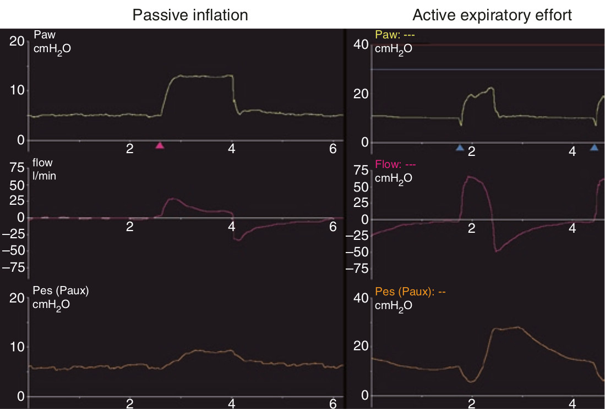

در حالتی که هواگیری ریه پاسیو باشد و تلاش بازدمی فعال روی دهد، ناحیه استراحت دمی بر روی منحنی PES تغییر میکند. هواگیری پاسیو وقتی است که تلاش دمی موجود نباشد و یا صعیف و در مقایسه با زمان دم کوتاه باشد. با هواگیری پاسیو ریه PES شروع به افزایش میکند. PES ممکن است برای مدت کوتاهی از PES پایان بازدمی بیشتر شود. مشخصه تلاش بازدمی فعال این است که PES بصورت سریعی از خط پایه فراتر می رود. این افزایش PES به سطوح بالای خط پایه در دوره بازدم، طولانی می شود.

افزایش PES در انتهای تلاش دمی:
۱ - بعلت استراحت دمی است
۲ - در حالت طبیعی به فشار پایان بازدمی میرسد
۳ - شکل آن توسط تلاش بازدمی فعال به هم میریزد
۴ - می تواند از حط پایه بالاتر رود
۵ - تمام موارد فوق